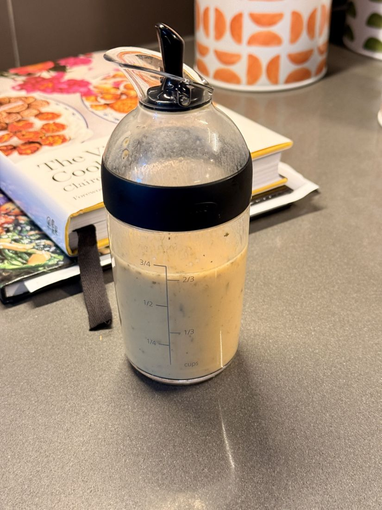

Thistle & Cypress House Vinaigrette
A simple, dependable daily salad dressing balanced with crisp apple cider vinegar, Dijon mustard, and rich extra virgin olive oil.
Overview
By leaning into a dependable ratio of extra virgin olive oil, crisp apple cider vinegar, and sharp Dijon mustard, we skip the processed stabilizers of store-bought alternatives. It is a vibrant, fresh emulsion meant to be enjoyed immediately in its prime.
This vinaigrette relies on a strong emulsification created by the physical agitation of shaking, aided naturally by the Dijon mustard. Using a dedicated shaker bottle removes the need for a whisk and extra bowls, keeping your kitchen rhythm clean and minimal.
Because this recipe utilizes 100% pure, cold-pressed extra virgin olive oil without chemical emulsifiers, it will respect its natural properties. If stored in a cold refrigerator, the oil will begin to solidify, clump, and separate.
Ingredients
Base & Acids
- 1/3 cup High-quality extra virgin olive oil
- 1/4 cup Apple cider vinegar
Binders & Seasonings
- 2 tbsp Dijon mustard (the essential binder)
- A small pinch of fine sea salt
- A generous pinch of freshly cracked black pepper
- 1 tsp Dried herbs (Herbes de Provence or Italian seasoning, optional)
Method
1. Measure the Liquid Base
- Take your shaker bottle and pour the 1/3 cup of extra virgin olive oil directly into the vessel.
- Add the 1/4 cup of apple cider vinegar. At this stage, you will see the distinctive separation of the golden oil floating gracefully atop the vinegar.
2. Introduce the Binder & Seasonings
- Spoon 2 tablespoons of Dijon mustard into the bottle. The mustard is key; it acts as the natural surfactant that will coax the oil and acid to unite.
- Drop in your pinch of sea salt and a healthy twist of fresh black pepper.
- If you are opting for an earthier, herbaceous profile today, toss in your teaspoon of Herbes de Provence or Italian seasoning.
3. The Emulsion
- Secure the lid of your shaker bottle tightly, ensuring the pouring spout is completely sealed.
- Shake the bottle vigorously for 10 to 15 seconds. Watch as the sharp borders between the oil and vinegar dissolve, turning into a uniform, smooth, and creamy golden dressing.
4. Serve Fresh

- Drizzle immediately over your salad greens or seasonal vegetables.
- Enjoy the crisp, bright balance right away while the texture is at its peak.
Tips & Notes
The Vessel: While a glass jar works in a pinch, a specialized shaker bottle with a clean pouring spout makes it easy to emulsify and serve without drips.
The Ratio: This recipe favors a sharp, bright, slightly more acidic tang than the standard 3-to-1 oil-to-vinegar rule. It beautifully cuts through denser greens like romaine or kale.
Leftovers & Separation: If you happen to have leftovers that solidify in the cold, simply let the bottle sit on the counter at room temperature for 15–20 minutes and shake vigorously again to bring the emulsion back to life.
Variations: If your garden is overflowing with fresh herbs in the coming seasons, feel free to finely mince fresh chives or tarragon in place of the dried herbs.
Want the story behind the vinaigrette?
Read more about how this daily dressing staple came to be in the kitchen.
Go back to the house vinaigrette story →